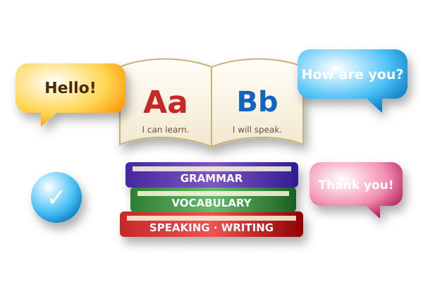
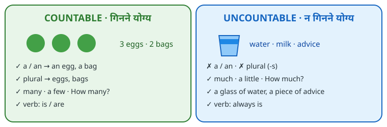

हिंदी पट्टी – हर नियम के नीचे आसान हिंदी में समझ
Levels: Foundation Intermediate Advanced Exam Focus
In Volume 1 you met the 8 parts of speech for the first time (Chapter 4). In this volume you study each one in detail: nouns, pronouns, articles, determiners, adjectives, adverbs, prepositions, conjunctions and interjections – the words that make up every English sentence.
Volume 1 (Chapter 4) में आपने 8 शब्द-भेदों की पहली झलक देखी थी। इस volume में हर शब्द-भेद को विस्तार से सीखेंगे – संज्ञा, सर्वनाम, a/an/the, some/any जैसे शब्द, विशेषण, क्रिया-विशेषण, संबंधसूचक, समुच्चयबोधक और विस्मयादिबोधक। इन्हीं से हर English वाक्य बनता है।
| You should already know (Volume 1) | Chapter |
|---|---|
| vowel and consonant sounds (for a/an) | 1–2 |
| capital letters and the apostrophe | 3 |
| subject, verb, object and word order | 4 |
| phrase, clause and sentence | 5 |
| questions, negatives and be / have / do | 7–8 |
अगर ऊपर की कोई चीज़ कमज़ोर लगे, तो पहले Volume 1 का वह chapter दोहरा लीजिए। नीचे का छोटा test 5 मिनट में कीजिए – 8 में से 6 से कम आएँ तो Volume 1 की Part A Revision Quiz फिर से कीजिए।
रोज़ थोड़ा, पर नियम से: एक chapter दो दिन में – पहले दिन नियम, उदाहरण और गलतियाँ; दूसरे दिन practice और answer key। हर गलत उत्तर को अपनी कॉपी के "My Mistakes" पन्ने पर सही रूप के साथ लिखिए।
1-c honest में h silent है → an। (Ch 1)
2-b कर्ता + क्रिया + कर्म + समय। (Ch 4)
3-c your brother = he → Does। (Ch 7)
4-c कर्ता + क्रिया नहीं → phrase। (Ch 5)
5-c doesn't + मूल क्रिया। (Ch 7)
6-b "पास होना" में -ing नहीं। (Ch 8)
7-b its = उसका (बिना apostrophe)। (Ch 3)
8-c many people बहुवचन → were। (Ch 8)
Look around your room. You can say one chair, two chairs, three books. But can you say two waters or three furnitures? No! We say two bottles of water and three pieces of furniture.
कमरे में देखिए: कुर्सी, किताब, पंखा गिने जा सकते हैं (one chair, two chairs)। पर पानी, फ़र्नीचर, दूध को सीधे नहीं गिनते – two bottles of water (पानी की दो बोतलें) कहते हैं। यही इस chapter का मुख्य विचार है।
A noun is the name of a person, place, animal, thing, substance, group, idea or feeling.
| Names a … | Examples |
|---|---|
| person | Ravi, teacher, doctor, mother, Mr Patel |
| place | Jaipur, school, market, India, kitchen |
| animal | dog, cow, peacock, elephant |
| thing | phone, bag, bus, chair, ticket |
| substance / material | water, rice, gold, cotton, petrol |
| group | team, family, class, crowd, army |
| idea / feeling / quality | honesty, love, freedom, anger, childhood |
Noun (संज्ञा) = किसी व्यक्ति, जगह, जानवर, चीज़, पदार्थ, समूह, विचार या भावना का नाम। Ravi (व्यक्ति), Jaipur (जगह), phone (चीज़), water (पदार्थ), team (समूह), honesty (ईमानदारी – गुण)।
Test for a noun: can you put a, an, the, my or this before it? – a phone, the market, my mother, this idea → nouns.
पहचानने की आसान जाँच: शब्द से पहले a, an, the, my, this लगाकर देखिए – अर्थ बने तो वह संज्ञा है।
| Kind | Meaning | Examples | Capital letter? |
|---|---|---|---|
| Proper noun | name of one particular person, place or thing | Priya, Mumbai, the Ganga, Monday, Diwali, Tata | Yes, always |
| Common noun | general name for any member of a class | girl, city, river, day, festival, company | No |
| Collective noun | name of a group as one unit | team, family, class, crowd, flock, bunch, jury | No |
| Material noun | name of a substance something is made of | gold, iron, wood, cotton, milk, rice, sand | No |
| Abstract noun | name of a quality, feeling, state or idea – you cannot touch it | honesty, kindness, fear, childhood, freedom, success | No |
Proper (व्यक्तिवाचक) = किसी ख़ास एक का नाम – हमेशा capital (Priya, Mumbai)। Common (जातिवाचक) = पूरी जाति का सामान्य नाम (girl, city)। Collective (समूहवाचक) = समूह का नाम (team, family)। Material (द्रव्यवाचक) = पदार्थ (gold, milk)। Abstract (भाववाचक) = गुण, भावना या अवस्था जिसे छू नहीं सकते (honesty, fear, childhood)।
The team from Kerala showed great courage and won a cup made of silver.
team → collective · Kerala → proper · courage → abstract · cup → common · silver → material
अर्थ: केरल की टीम ने बहुत हिम्मत दिखाई और चाँदी का बना कप जीता। team समूहवाचक, Kerala व्यक्तिवाचक, courage (हिम्मत) भाववाचक, cup जातिवाचक, silver (चाँदी) द्रव्यवाचक।
a team of players · a class of students · a crowd of people · a herd of cows · a flock of sheep / birds · a bunch of keys / flowers / grapes · a pack of cards / wolves · a swarm of bees · a fleet of ships · a panel of judges
समूह के लिए ख़ास शब्द: खिलाड़ियों की team, लोगों की crowd (भीड़), गायों का herd (झुंड), भेड़ों/पक्षियों का flock, चाबियों/फूलों/अंगूरों का bunch (गुच्छा), मधुमक्खियों का swarm।
| From an adjective | From a verb | From a common noun |
|---|---|---|
| honest → honesty | decide → decision | child → childhood |
| kind → kindness | enter → entrance | friend → friendship |
| brave → bravery | serve → service | hero → heroism |
| strong → strength | grow → growth | slave → slavery |
| free → freedom | believe → belief | king → kingdom |
विशेषण, क्रिया या जातिवाचक संज्ञा में -ty, -ness, -ion, -th, -hood, -ship, -dom जैसे अंत जोड़कर भाववाचक संज्ञा बनती है: honest → honesty (ईमानदार → ईमानदारी), child → childhood (बच्चा → बचपन)। पूरी सूची Chapter 50 में।
| Countable nouns | Uncountable nouns | |
|---|---|---|
| What are they? | separate things you can count | substances, liquids, masses, ideas – seen as one whole |
| Plural? | Yes: book → books | No plural: ✗ waters, advices |
| a / an? | Yes with singular: a book, an egg | No: ✗ a rice, an advice |
| Verb | singular or plural: The book is … / The books are … | always singular: The milk is fresh. |
| How many / much? | How many books? many books | How much water? much water |
| Small number / amount | a few eggs | a little sugar |
| Examples | chair, egg, rupee, idea, student, job, bag, suitcase | water, milk, rice, sugar, money, bread, information, advice, furniture, luggage, traffic, news, homework, work |
Countable = जिन्हें अलग-अलग गिन सकते हैं – इनका बहुवचन बनता है और एकवचन के साथ a/an लगता है (a book, two books)। Uncountable = पदार्थ, तरल, ढेर या विचार जिन्हें एक पूरे के रूप में देखते हैं – इनका बहुवचन नहीं, a/an नहीं, क्रिया हमेशा एकवचन (The milk is fresh)। गिनती के लिए many / a few, मात्रा के लिए much / a little।

Use a unit word + of:
| Unit | Examples |
|---|---|
| a piece of | a piece of advice / information / furniture / news / cake / paper |
| a glass / cup / bottle of | a glass of water, a cup of tea, two bottles of oil |
| a kilo / litre / packet of | a kilo of rice, a litre of milk, a packet of salt |
| a loaf / slice of | a loaf of bread, two slices of bread |
| an item of | an item of luggage / clothing / news |
| a bag / suitcase (countable word) | two bags instead of ✗ two luggages |
न गिनी जाने वाली चीज़ को गिनने के लिए इकाई (unit) + of लगाइए: a piece of advice (एक सलाह), a cup of tea (एक कप चाय), a kilo of rice (एक किलो चावल), two slices of bread (ब्रेड के दो टुकड़े)। luggage की जगह गिनने के लिए bags / suitcases बोलिए।
advice, information, furniture, luggage, baggage, equipment, news, homework, work (= job tasks), knowledge, traffic, scenery, weather, money, hair (on your head), bread, toast, research, evidence, stationery, machinery, jewellery, poetry, feedback
✓ She gave me some useful advice. ✗ She gave me some useful advices.
✓ The news is good. ✗ The news are good. (news ends in -s but is singular and uncountable.)
ये संज्ञाएँ English में हमेशा uncountable हैं – इनमें -s नहीं लगता और a/an नहीं: advice, information, furniture, luggage, news, homework, equipment, traffic, scenery। news के आख़िर में -s है, फिर भी यह एकवचन है: The news is good (ख़बर अच्छी है)।
| Uncountable (the substance / general idea) | Countable (one item / a type / one occasion) |
|---|---|
| I don't like coffee. (the drink) | Two coffees, please. (two cups – in a café) |
| The window is made of glass. | a glass of water · I wear glasses. (spectacles) |
| Her hair is long. (all of it) | There's a hair in my soup! (one single hair) |
| I need paper to write on. | I bought a paper. (a newspaper) |
| He has a lot of experience. (knowledge from work) | It was an amazing experience. (one event) |
| There is no room in the car. (space) | a house with five rooms |
| Time is money. | I called him three times. (occasions) |
कुछ शब्द दोनों तरह से चलते हैं, अर्थ बदल जाता है: glass = काँच (uncountable) / गिलास (countable); hair = सारे बाल (uncountable) / एक बाल (countable); paper = कागज़ / अख़बार; experience = अनुभव (ज्ञान) / एक घटना; room = जगह / कमरा; time = समय / बार।
| ✗ Wrong | ✓ Right | Why · क्यों |
|---|---|---|
| He gave me many advices. | He gave me a lot of advice / many pieces of advice. | advice is uncountable · advice का बहुवचन नहीं |
| We bought new furnitures. | We bought new furniture. | uncountable · furniture में -s नहीं |
| How many luggages do you have? | How many bags do you have? / How much luggage…? | count bags, not luggage · bags गिनिए |
| I need an information. | I need some information / a piece of information. | no a/an with uncountable · a/an नहीं |
| The news are shocking. | The news is shocking. | news is singular · news एकवचन है |
| I have many homeworks today. | I have a lot of homework today. | uncountable · homework में -s नहीं |
| There is too much traffics. | There is too much traffic. | uncountable · traffic में -s नहीं |
| I went to delhi. | I went to Delhi. | proper noun → capital · व्यक्तिवाचक में capital |
Error-spotting questions love advice, information, furniture, luggage, equipment, news, scenery, poetry, machinery. If you see these with -s, a/an or many, it is almost always the error.
Error spotting में advice, information, furniture, luggage, news, scenery के साथ -s, a/an या many दिखे, तो लगभग हमेशा वहीं गलती है।
संज्ञा = नाम · 5 प्रकार · countable: बहुवचन, a/an, many · uncountable: बहुवचन नहीं, a/an नहीं, एकवचन क्रिया, much · गिनती के लिए a piece of।
Practice A
1-b Narmada एक ख़ास नदी का नाम → proper noun (capital)।
2-c herd = जानवरों का झुंड → collective noun।
3-a kindness (दयालुता) – छू नहीं सकते → abstract noun।
4-b iron (लोहा) – पदार्थ → material noun।
5-c luggage uncountable है; bag, suitcase, ticket गिने जा सकते हैं।
6-c advice uncountable → a/an और -s नहीं; some advice सही।
7-a news एकवचन, uncountable → is।
8-b water uncountable → How much।
9-c students countable → How many।
10-c sugar uncountable → a little।
11-b furniture uncountable → some (a/an या many नहीं)।
12-c brave → bravery (बहादुरी)।
13-b a bunch of keys (चाबियों का गुच्छा)।
14-b यहाँ a paper = एक अख़बार (countable)।
Practice B 15. P (proper – ख़ास इमारत का नाम) 16. A 17. Col 18. M 19. C 20. A
Practice C 21. C 22. U 23. C 24. U 25. U 26. C 27. U 28. C
Practice D 29. piece 30. loaf (या slice) 31. kilos 32. cup 33. bottle
Practice E 34. strength 35. friendship 36. decision 37. freedom 38. growth
Practice F
I have a lot of work to finish today. (work = काम, uncountable)
Practice G – sample answers · नमूना उत्तर
2 kilos of rice, a packet of salt, a litre of oil, a loaf of bread, a dozen eggs, a bottle of ketchup. (eggs countable है, इसलिए a dozen eggs।)
One book → two books. One box → two boxes. One child → two … ? Not childs – children! One sheep → two … sheep!
ज़्यादातर शब्दों में -s लगाकर बहुवचन बनता है, पर कुछ शब्द बिल्कुल अलग रूप लेते हैं (child → children), और कुछ बदलते ही नहीं (sheep → sheep)। आइए सब नियम देखें।
| Ending of the singular | Add | Examples |
|---|---|---|
| most nouns | -s | books, girls, phones, days, keys |
| -s, -ss, -sh, -ch, -x, -z | -es | buses, classes, dishes, watches, boxes, quizzes |
| consonant + y | y → ies | baby → babies, city → cities, party → parties |
| vowel + y | -s | boys, toys, monkeys, holidays |
| -f / -fe (many words) | -ves | leaf → leaves, knife → knives, wife → wives, half → halves, shelf → shelves, life → lives, thief → thieves, wolf → wolves |
| -f (some words) | -s | roofs, chiefs, beliefs, proofs, chefs, cliffs |
| consonant + o (many) | -es | potatoes, tomatoes, heroes, echoes, mangoes (also mangos) |
| -o (short, foreign, vowel + o) | -s | photos, pianos, radios, videos, kilos, zoos, studios |
ज़्यादातर शब्दों में -s। s, sh, ch, x, z पर ख़त्म शब्दों में -es (बोलने में एक syllable बढ़ जाता है: box-es)। व्यंजन + y → ies (city → cities); स्वर + y → सिर्फ़ -s (boys)। कई -f/-fe वाले शब्द → -ves (knife → knives), पर roof, chief, belief में सिर्फ़ -s। potato, tomato, hero → -es; photo, piano, radio, video → -s।
| Change of vowel | -en | Same form for both | Foreign (formal/academic) |
|---|---|---|---|
| man → men | child → children | sheep → sheep | criterion → criteria |
| woman → women | ox → oxen | deer → deer | phenomenon → phenomena |
| foot → feet | fish → fish (usual) | analysis → analyses | |
| tooth → teeth | aircraft → aircraft | crisis → crises | |
| goose → geese | series → series | basis → bases | |
| mouse → mice | species → species | medium → media | |
| louse → lice | datum → data (often used as uncountable) | ||
| person → people (usual) | cactus → cacti / cactuses |
इन्हें रट लीजिए: man → men (आदमी), woman → women (औरतें – उच्चारण "विमिन"), foot → feet (पैर), tooth → teeth (दाँत), mouse → mice (चूहे), child → children (बच्चे), person → people (लोग)। sheep, deer, fish, series, species, aircraft का एकवचन और बहुवचन एक जैसा रहता है।
-s की आवाज़ तीन तरह की होती है: cups में "स", bags में "ज़", और buses, pages में "इज़" (एक हिस्सा बढ़ जाता है)।
| Group | Examples | Verb |
|---|---|---|
| Always plural (two-part things) | scissors, trousers, jeans, pants, shorts, glasses (spectacles), spectacles, pyjamas, tongs, pliers | plural: My jeans are new. · Count with a pair of: a pair of scissors |
| Always plural (others) | clothes, goods, thanks, congratulations, belongings, surroundings, outskirts, premises, police, cattle, people | plural: The police are here. The cattle are grazing. |
| Look plural but singular | news, mathematics, physics, economics, politics (subject), athletics, measles, diabetes | singular: Mathematics is easy. Measles is infectious. |
| Collective nouns | family, team, class, staff, committee, government | singular (as one unit) in Indian/American English: The team is strong. BrE also uses plural (members): The team are arriving. |
हमेशा बहुवचन: दो हिस्सों वाली चीज़ें – scissors (कैंची), trousers (पतलून), jeans, glasses (चश्मा) – और clothes, goods, police, cattle, people। इन्हें गिनने के लिए a pair of (a pair of scissors = एक कैंची)। दिखने में बहुवचन, पर एकवचन: news, mathematics, physics, economics, measles – क्रिया is। समूहवाचक (team, family) भारत/अमेरिका में आम तौर पर एकवचन (The team is…)।
(1) संख्या + संज्ञा जब दूसरी संज्ञा से पहले विशेषण बने तो एकवचन: a five-star hotel (पाँच-सितारा होटल), a ten-rupee note। (2) hundred, thousand, lakh, crore, dozen संख्या के बाद -s नहीं लेते: five lakh rupees। (3) यौगिक शब्द में मुख्य शब्द बहुवचन बनता है: brothers-in-law (साले/जीजा लोग), passers-by (राहगीर)।
| Gender | Meaning | Examples |
|---|---|---|
| Masculine | male | man, boy, father, king, actor, uncle, nephew, bull |
| Feminine | female | woman, girl, mother, queen, actress, aunt, niece, cow |
| Common | male or female | teacher, doctor, student, friend, cousin, parent, child, baby, person |
| Neuter | non-living things / no gender | table, book, tree, city, phone, idea |
English में संज्ञा का लिंग असली लिंग से तय होता है, शब्द से नहीं। हिंदी में किताब स्त्रीलिंग और पेड़ पुल्लिंग है, पर English में book, tree, table – सब neuter (नपुंसक) हैं और इनके लिए it आता है। teacher, doctor, friend पुरुष या महिला दोनों हो सकते हैं – common gender।
| Masculine | Feminine | Masculine | Feminine |
|---|---|---|---|
| man | woman | husband | wife |
| boy | girl | bridegroom | bride |
| father | mother | son | daughter |
| brother | sister | nephew | niece |
| uncle | aunt | king | queen |
| prince | princess | lord | lady |
| host | hostess | hero | heroine |
| lion | lioness | tiger | tigress |
| bull / ox | cow | horse / stallion | mare |
| dog | bitch (use: female dog) | cock / rooster | hen |
| gentleman | lady | Mr | Mrs / Ms / Miss |
Modern English, especially in offices and exams, prefers one word for everyone:
| Older | Modern (preferred) |
|---|---|
| chairman / chairwoman | chairperson, chair |
| salesman / saleswoman | salesperson, sales executive |
| policeman / policewoman | police officer |
| fireman | firefighter |
| air hostess / steward | flight attendant, cabin crew |
| mankind | humankind, people |
| actress, authoress, poetess | actor (both), author, poet (both) |
| Ms (pronounced "miz") is used for a woman when marital status is unknown or not relevant. |
आज की औपचारिक English में सबके लिए एक ही शब्द बेहतर माना जाता है: chairperson, police officer, firefighter, flight attendant। actor, author, poet अब पुरुष और महिला दोनों के लिए। विवाहित है या नहीं – पता न हो तो महिला के लिए Ms ("मिज़") लिखिए।
| ✗ Wrong | ✓ Right | Why · क्यों |
|---|---|---|
| two childs / childrens | two children | irregular; children is already plural · children पहले से बहुवचन |
| many peoples came | many people came | people = plural of person · people ख़ुद बहुवचन |
| a ten-rupees note | a ten-rupee note | number + noun before a noun → singular · विशेषण बना तो एकवचन |
| five lakhs rupees | five lakh rupees | no -s after a number · संख्या के बाद lakh में -s नहीं |
| My trouser is torn. | My trousers are torn. | always plural · हमेशा बहुवचन |
| a scissor | a pair of scissors / scissors | always plural · a pair of लगाइए |
| Mathematics are my favourite subject. | Mathematics is … | subject names in -ics are singular · विषय का नाम एकवचन |
| I bought new furnitures and cloths. | … new furniture and clothes. | clothes = कपड़े (पहनने के); cloths = कपड़े के टुकड़े · अर्थ अलग |
| The book is on the table. She is very old. (about the book) | It is very old. | non-living things are neuter → it · निर्जीव के लिए it |
| cloth (uncountable: material) – cotton cloth | clothes (plural: things you wear) – new clothes |
| people (plural of person) – ten people | peoples (nations / ethnic groups) – the peoples of Asia |
| fish (usual plural) – I caught five fish. | fishes (different species) – the fishes of the Indian Ocean |
| hundreds of people (unknown number) | two hundred people (exact number) |
cloth = कपड़ा (सामग्री), clothes = पहनने के कपड़े। people = लोग, peoples = जातियाँ/राष्ट्र। five fish = पाँच मछलियाँ, fishes = मछलियों की अलग-अलग प्रजातियाँ। hundreds of = सैकड़ों (अनिश्चित), two hundred = ठीक दो सौ।
Watch for: lakh/crore/dozen/hundred with -s after a number, number-noun adjectives (a two-hour journey), always-plural nouns + singular verb, and -ics subjects + plural verb. These four are the most common plural errors in SSC/bank papers.
परीक्षा में सबसे ज़्यादा पूछे जाने वाली चार गलतियाँ: संख्या के बाद lakhs/dozens, a two-hours journey, trousers/scissors के साथ is, और mathematics/economics के साथ are।
बहुवचन के नियम · अनियमित रूप · हमेशा बहुवचन/एकवचन वाले शब्द · संख्या-विशेषण एकवचन · निर्जीव = it।
Practice A
1-b -fe → -ves: knives।
2-b व्यंजन + o वाले कई शब्द → -es: tomatoes।
3-b photo छोटा रूप है (photograph) → सिर्फ़ -s।
4-c अनियमित: tooth → teeth।
5-b यौगिक शब्द में मुख्य शब्द mother बहुवचन बनता है।
6-b संख्या + संज्ञा विशेषण बनी → एकवचन, hyphen के साथ।
7-b संख्या के बाद lakh में -s नहीं; rupees बहुवचन।
8-b jeans हमेशा बहुवचन → are।
9-c -ics वाले विषय एकवचन → is।
10-b deer का एकवचन और बहुवचन एक जैसा।
11-b nephew (भतीजा/भांजा) → niece (भतीजी/भांजी)।
12-c लिंग-निरपेक्ष शब्द firefighter।
13-b police हमेशा बहुवचन → are।
14-c teacher पुरुष या महिला दोनों → common gender।
Practice B 15. churches 16. ladies 17. days 18. wolves 19. roofs 20. mice 21. women 22. series 23. passers-by 24. crises
Practice C 25. bridegroom 26. hostess 27. tiger 28. daughter 29. cock / rooster 30. lady
Practice D 31. is 32. are 33. are 34. is 35. are
Practice E
I need a new pair of trousers / new trousers for the interview.
Practice F – sample answers · नमूना उत्तर
Hello Masterji, I will come on Saturday to collect my two pairs of trousers and three shirts. Please keep them ready. Thank you.
This is Riya's phone. = This phone belongs to Riya. · This phone is hers.
हिंदी में "रिया का फ़ोन", "उसका फ़ोन" कहते हैं। English में यह काम 's (Riya's), of (the name of the shop) और possessive शब्द (her, hers) करते हैं।
| Owner | Rule | Examples |
|---|---|---|
| singular noun | 's | the boy's bag (one boy) · my sister's room · Ramesh's shop |
| singular noun ending in -s | 's (usual) or ' | James's car / James' car · the boss's office |
| plural noun ending in -s | ' only | the boys' bags (many boys) · my parents' house · the teachers' room |
| plural noun not ending in -s | 's | the children's park · women's day · men's toilet · people's opinion |
| compound noun | 's on the last word | my mother-in-law's house · the Prime Minister's speech |
एक मालिक → 's: the boy's bag (लड़के का बैग)। -s वाले बहुवचन मालिक → सिर्फ़ ': the boys' bags (लड़कों के बैग)। बिना -s वाले बहुवचन (children, women, men, people) → 's: children's park। यौगिक शब्द में आख़िरी शब्द पर 's: my mother-in-law's house (मेरी सास का घर)।
apostrophe की जगह से अर्थ बदलता है: friend's = एक दोस्त का, friends' = कई दोस्तों का। student's marks = एक छात्र के अंक, students' marks = सभी छात्रों के अंक।
| Use 's mainly with … | Use of mainly with … |
|---|---|
| people and animals: Meena's idea, the dog's tail | things and places: the door of the car, the roof of the house |
| organisations, countries, cities: the company's profit, India's population (of also OK) | long owner phrases: the name of the man who called yesterday |
| time: today's paper, a week's holiday | parts, amounts, positions: the end of the film, the top of the page, a cup of tea |
| Compound nouns also work for things: the car door, the kitchen window, the table leg. |
's आम तौर पर लोगों और जानवरों के साथ (Meena's idea), संस्था/देश के साथ (India's population) और समय के साथ (today's paper = आज का अख़बार)। of आम तौर पर निर्जीव चीज़ों के साथ (the door of the car = गाड़ी का दरवाज़ा), लंबे वाक्यांशों और हिस्से/मात्रा के साथ (the end of the film, a cup of tea)। चीज़ों के लिए दो संज्ञाएँ साथ भी चलती हैं: the car door।
a day's work · a week's leave · today's news · tomorrow's meeting · two hours' drive · three months' salary · a stone's throw (very near)
Compare: a two-hour drive (number + noun adjective, Ch 10) = two hours' drive – both correct.
समय और दूरी के साथ भी possessive लगता है: a week's leave (एक हफ़्ते की छुट्टी), two hours' drive (दो घंटे का सफ़र), a stone's throw (बिल्कुल पास)। a two-hour drive भी सही है।
साझा: दोनों का एक ही घर → आख़िरी नाम पर 's (Ram and Sita's house)। अलग-अलग: हर एक की अपनी चीज़ → दोनों नामों पर 's (Ram's and Sita's phones)। "मेरा एक दोस्त" = a friend of mine (a my friend नहीं)।
| Person | Possessive adjective (+ noun) | Possessive pronoun (no noun) |
|---|---|---|
| I | my book | The book is mine. |
| you | your bag | The bag is yours. |
| he | his car | The car is his. |
| she | her phone | The phone is hers. |
| it | its tail | – (rarely used) |
| we | our house | The house is ours. |
| they | their tickets | The tickets are theirs. |
| No apostrophe in any of these: ✗ your's, her's, our's, their's, it's (for possession). |
my, your, his, her, its, our, their हमेशा संज्ञा से पहले आते हैं (my book = मेरी किताब)। mine, yours, his, hers, ours, theirs अकेले आते हैं, उनके बाद संज्ञा नहीं (The book is mine = किताब मेरी है)। इनमें कभी apostrophe नहीं लगता – yours, your's नहीं।
| Possessive (belonging) | Short form (contraction) |
|---|---|
| its – The bird hurt its wing. | it's = it is / it has – It's raining. |
| your – Is this your pen? | you're = you are – You're late. |
| their – Their house is big. | they're = they are – They're coming. · there = place – Sit there. |
| whose – Whose bag is this? | who's = who is / who has – Who's at the door? |
बोलने में एक जैसे, अर्थ अलग: its = उसका / it's = it is; your = तुम्हारा / you're = you are; their = उनका / they're = they are / there = वहाँ; whose = किसका / who's = who is।
| ✗ Wrong | ✓ Right | Why · क्यों |
|---|---|---|
| This is my fathers car. | This is my father's car. | apostrophe needed · 's लगाइए |
| the girls's hostel | the girls' hostel | plural in -s → ' only · -s वाले बहुवचन में सिर्फ़ ' |
| the childrens' toys | the children's toys | children has no -s → 's · children में 's |
| Is this pen your's? | Is this pen yours? | no apostrophe in possessive pronouns · yours में ' नहीं |
| He is a my friend. | He is a friend of mine / my friend. | double possessive · "मेरा एक दोस्त" |
| the table's leg | the leg of the table / the table leg | things → of or compound · निर्जीव के लिए of |
| Ram's and Sita's house (one house) | Ram and Sita's house | joint ownership → 's once · साझा = एक बार 's |
| Who's car is this? | Whose car is this? | whose = belonging · किसका = whose |
In error spotting, check: (1) 's vs s' – is the owner one or many? (2) its/it's, whose/who's (3) yours/hers/theirs without apostrophe (4) a friend of mine (not a my friend / a friend of me).
जाँचिए: मालिक एक है या कई ('s या s')? its/it's, whose/who's सही है? yours में apostrophe तो नहीं? a friend of mine सही रूप है।
's / s' · लोगों के लिए 's, चीज़ों के लिए of · साझा और अलग स्वामित्व · my + संज्ञा, mine अकेला · yours, its, whose में apostrophe नहीं।
Practice A
1-b एक भाई → brother's।
2-c कई लड़के, boys में -s है → सिर्फ़ apostrophe: boys'।
3-c children में -s नहीं → children's।
4-b समय के साथ possessive: a week's leave।
5-b निर्जीव चीज़ का हिस्सा → of: the roof of the house।
6-b possessive pronoun yours में apostrophe नहीं।
7-c its = उसका (बिल्ली का)। it's = it is।
8-b Whose = किसका।
9-b साझा स्वामित्व → आख़िरी नाम पर 's।
10-c "मेरा एक दोस्त" = a friend of mine।
11-a यौगिक नाम में आख़िरी शब्द पर 's।
12-b अलग-अलग फ़ोन → दोनों नामों पर 's।
13-b संज्ञा के बिना अकेला → theirs।
14-b Who's = Who is (कौन है)।
Practice B
my sister's bag 16. the players' uniforms 17. the children's toys 18. Dr Sharma's clinic 19. one month's salary 20. the people's opinion
Practice C 21. my … mine 22. yours 23. her 24. ours 25. their
Practice D 26. It's 27. Whose 28. Their 29. You're 30. Who's
Practice E
My uncle's shop is closed on Mondays.
She is a cousin of mine. / She is my cousin.
Practice F
This is my friend's bike.
She is a friend of mine.
Practice G – sample answer · नमूना उत्तर
I lost my black backpack near Gate 2. It has my brother's laptop inside and a blue water bottle. The name tag says "Kiran Shah" – the bag is mine.
Ravi called Ravi's mother because Ravi wanted Ravi's mother to bring Ravi's charger. – Too many Ravis! → Ravi called his mother because he wanted her to bring his charger.
बार-बार संज्ञा दोहराने की बजाय हम सर्वनाम (pronoun) लगाते हैं – he, his, her। सर्वनाम संज्ञा की जगह आता है और वाक्य को छोटा और साफ़ बनाता है।
| Person | Subject (does the action) | Object (receives the action) | Possessive adj. / pronoun | Reflexive |
|---|---|---|---|---|
| 1st sing. | I | me | my / mine | myself |
| 2nd | you | you | your / yours | yourself / yourselves |
| 3rd sing. male | he | him | his / his | himself |
| 3rd sing. female | she | her | her / hers | herself |
| 3rd sing. thing/animal | it | it | its / – | itself |
| 1st plural | we | us | our / ours | ourselves |
| 3rd plural | they | them | their / theirs | themselves |
Subject form (कर्ता) क्रिया से पहले: I, he, she, we, they (मैं, वह, हम, वे)। Object form (कर्म) क्रिया या preposition के बाद: me, him, her, us, them (मुझे, उसे, हमें, उन्हें)। She called me. = उसने मुझे फ़ोन किया। with him = उसके साथ।
पहचान की आसान तरकीब: दूसरा नाम हटाकर देखिए। My brother and I are twins → I am… ✓। The teacher praised my brother and me → praised me ✓ (praised I ✗)।
शिष्टता: अपने आप को आख़िर में रखिए – Ravi and I, I and Ravi नहीं। preposition के बाद object form: between you and me (तुम्हारे और मेरे बीच) – between you and I गलत। It's me (मैं हूँ) सामान्य English है।
Reflexive: कर्ता और कर्म एक ही व्यक्ति – I hurt myself (मुझे ख़ुद चोट लगी)। Emphatic: ज़ोर देने के लिए – I myself saw it (मैंने ख़ुद देखा)। by myself = अकेले / बिना मदद। परिचय में Myself Priya गलत है – कहिए I am Priya या My name is Priya।
| ✗ Wrong | ✓ Right | Why · क्यों |
|---|---|---|
| Me and Ravi went to the market. | Ravi and I went to the market. | subject form + yourself last · कर्ता = I, ख़ुद को आख़िर में |
| Myself Priya from Surat. | I am Priya from Surat. / My name is Priya. | reflexive is not a subject · Myself से परिचय नहीं |
| Please send it to myself. | Please send it to me. | normal object → me · सामान्य कर्म = me |
| between you and I | between you and me | after preposition → object · preposition के बाद me |
| He himself he did it. | He did it himself. / He himself did it. | no double subject · कर्ता दो बार नहीं |
| The book, it is on the table. | The book is on the table. | no extra pronoun after the noun · संज्ञा के बाद फिर it नहीं |
| I enjoyed at the party. | I enjoyed myself at the party. / I enjoyed the party. | enjoy needs an object · enjoy के बाद कर्म चाहिए |
| Near (यह / ये) | Far (वह / वे) | |
|---|---|---|
| Singular | this – This is my seat. | that – That is our bus. |
| Plural | these – These are fresh. | those – Those are old. |
| On the phone: This is Ravi speaking. · Is that Meena? |
पास की एक चीज़ = this, पास की कई = these, दूर की एक = that, दूर की कई = those। फ़ोन पर अपना परिचय: This is Ravi (मैं रवि बोल रहा हूँ)।
| some- (positive) | any- (questions, negatives) | no- (= not any) | every- (all) |
|---|---|---|---|
| someone / somebody | anyone / anybody | no one / nobody | everyone / everybody |
| something | anything | nothing | everything |
| somewhere | anywhere | nowhere | everywhere |
| - They take a singular verb: Everyone is here. Nobody knows. Something has happened. | |||
| - Use one negative only: I didn't see anyone. = I saw no one. | |||
| - Later reference: Someone left their bag. (his or her is formal) – both accepted. |
someone = कोई, anyone = कोई भी (सवाल/नकार में), no one / nobody = कोई नहीं, everyone = सब। something = कुछ, nothing = कुछ नहीं, everything = सब कुछ। इनके साथ क्रिया एकवचन: Everyone is here (सब यहाँ हैं – पर English में is)।
Ravi and Sita love each other. · The players congratulated one another.
each other = usually two people; one another = more than two (in everyday English both are used for any number).
each other / one another = एक-दूसरे को। They help each other = वे एक-दूसरे की मदद करते हैं। (They help themselves = वे अपनी ख़ुद मदद करते हैं – अर्थ अलग!)
सवाल में: who (कौन), whom (किसको), whose (किसका), which (कौन-सा), what (क्या)। वाक्य जोड़ने में: the man who helped me = वह आदमी जिसने मेरी मदद की। विस्तार Chapter 34 में।
(1) सर्वनाम अपनी संज्ञा से वचन और लिंग में मेल खाए: The company changed its logo (कंपनी = it)। (2) each, every, either, neither के साथ एकवचन क्रिया। (3) अगर he/she से दो लोग समझ आ सकते हैं, तो नाम दोहराइए – अर्थ साफ़ रहे।
| They blamed themselves. (each blamed self) | They blamed each other. (A blamed B, B blamed A) |
| I did it myself. (no help) | I did it by myself. (alone, no help) – same idea |
| Who did you call? (everyday) | Whom did you call? (formal) |
| She is older than me. (everyday) | She is older than I (am). (formal) |
themselves = अपने आप को, each other = एक-दूसरे को। Who/me रोज़ की बोलचाल में, Whom/I am औपचारिक लेखन में – दोनों सही।
Common exam errors: between you and I, Me and my friend went, Each of the boys have done their, One must do his duty (✓ formal; one's duty also ✓), Myself, and He and me went. Test by removing the other person.
परीक्षा में अक्सर: between you and I (गलत), Me and my friend went (गलत), Each of the boys have (गलत – has)। जाँच का तरीक़ा: दूसरा व्यक्ति हटाकर पढ़िए।
कर्ता: I/he/they · कर्म: me/him/them · ख़ुद को आख़िर में · myself सिर्फ़ ज़रूरत पर · everyone + एकवचन क्रिया · संदर्भ साफ़।
Practice A
1-b कर्ता का हिस्सा → I (I am in the same class ✓)।
2-b कर्म का हिस्सा → me (asked me ✓)।
3-b preposition between के बाद object form me।
4-c Myself से परिचय गलत; I am Arjun।
5-b कर्ता और कर्म एक ही → herself।
6-c enjoy को कर्म चाहिए → enjoyed themselves।
7-b पास की कई चीज़ें (shoes) → These।
8-b Everyone के साथ एकवचन क्रिया is।
9-b नकार (didn't) के साथ anybody – एक ही नकार।
10-b एक-दूसरे की मदद → each other।
11-b कंपनी = it → its।
12-b Each of … + एकवचन क्रिया has।
13-b कर्म के लिए औपचारिक रूप Whom।
14-b सीधे शब्दों से साफ़ है कि देर रिया को हुई; (a) में she अस्पष्ट है।
Practice B 15. He 16. her 17. We 18. them 19. It 20. our
Practice C 21. yourself 22. ourselves 23. itself 24. themselves 25. himself
Practice D 26. Somebody 27. anything 28. These 29. Nobody 30. That
Practice E
They hurt themselves in the accident. (theirselves कोई शब्द नहीं)
Practice F – sample answers · नमूना उत्तर
Good morning. I am Kavya Desai, and I am from Vadodara. I have completed my B.Com and I am looking for an accounts job.
I saw a dog in the street. The dog was hungry, so I gave it a biscuit.
First time: a dog (any dog, new information). Second time: the dog (the one we already know).
पहली बार किसी चीज़ का ज़िक्र – a (एक कुत्ता, कोई भी)। दूसरी बार वही चीज़ – the (वह कुत्ता, जिसकी बात हो चुकी)। हिंदी में "एक" और "वह" से यही काम होता है।
| a + consonant sound | an + vowel sound |
|---|---|
| a book, a car, a girl | an apple, an egg, an idea, an orange |
| a university, a uniform, a useful tool ("yoo") | an umbrella, an ugly box ("uh") |
| a one-way street, a one-rupee coin ("w") | an hour, an honest man, an heir, an honour (silent h) |
| a European, a Europe trip ("yoo") | an MBA, an MLA, an SMS, an X-ray, an FIR ("em", "es", "eks", "ef") |
| a hospital, a hotel, a house (h pronounced) | an 8-year-old boy, an 11-storey building ("ay", "i") |
a/an का चुनाव अक्षर से नहीं, आवाज़ से: university ("यू" = य की आवाज़) → a; hour (h नहीं बोलते, "आवर") → an; MBA ("एम") → an; one ("वन") → a।
Only with singular countable nouns.
| Use | Examples |
|---|---|
| 1. something mentioned for the first time | There is a cat on the roof. |
| 2. any one of a kind / not specific | Can I borrow a pen? (any pen) |
| 3. jobs, roles, descriptions | She is a nurse. He is an engineer. It's a beautiful city. |
| 4. meaning one | a hundred, a dozen, a kilo, half an hour |
| 5. rate, frequency, price (= per) | ₹40 a kilo, twice a day, 80 km an hour |
| 6. exclamations with what / such | What a day! It was such a good film. |
| 7. some illnesses | a cold, a headache, a fever, a cough |
a/an सिर्फ़ एकवचन, गिनने योग्य संज्ञा के साथ: (1) पहली बार ज़िक्र, (2) कोई भी एक, (3) नौकरी/पेशा – She is a nurse (हिंदी में "वह नर्स है" – पर English में a ज़रूरी!), (4) "एक" के अर्थ में – a hundred, (5) दर – ₹40 a kilo (₹40 प्रति किलो), twice a day (दिन में दो बार), (6) What a day!, (7) बीमारी – a cold, a headache।
Used with singular, plural and uncountable nouns.
| Use | Examples |
|---|---|
| 1. already mentioned / both people know which | Close the door, please. · How was the film? |
| 2. made specific by a phrase or clause | the girl in the red dress · the book that I lent you |
| 3. only one exists | the sun, the moon, the earth, the sky, the internet, the President of India |
| 4. superlatives and ordinals | the best, the tallest, the most important · the first, the last, the only |
| 5. rivers, seas, oceans, canals, deserts, mountain ranges, island groups | the Ganga, the Arabian Sea, the Indian Ocean, the Thar Desert, the Himalayas, the Andamans |
| 6. countries with plural / union / republic names | the USA, the UK, the Netherlands, the Maldives, the Philippines |
| 7. newspapers, famous buildings, trains, ships, holy books | the Times of India, the Taj Mahal, the Rajdhani Express, the Ramayana, the Bible |
| 8. musical instruments (play) | She plays the sitar / the piano / the guitar. |
| 9. the + adjective = a group of people | the rich, the poor, the old, the young, the blind |
| 10. the + nationality (people of a country) | the Japanese, the French, the British |
| 11. fixed phrases | in the morning/evening, at the moment, go to the cinema, on the phone, the same |
the = "वही / जिसे हम दोनों जानते हैं"। (1) पहले ज़िक्र हो चुका या सामने वाला जानता है, (2) किसी वाक्यांश से ख़ास बना (the girl in the red dress = लाल ड्रेस वाली लड़की), (3) दुनिया में एक ही – the sun, the moon, (4) सबसे… (the best) और क्रम (the first), (5) नदी, समुद्र, महासागर, रेगिस्तान, पर्वत-श्रृंखला – the Ganga, the Himalayas, (6) the USA, the UK, (7) अख़बार, प्रसिद्ध इमारतें, ट्रेन, धर्मग्रंथ – the Taj Mahal, the Ramayana, (8) वाद्ययंत्र बजाना – play the sitar, (9) the rich = अमीर लोग, (10) the Japanese = जापानी लोग।
| Use | Examples |
|---|---|
| 1. plural or uncountable nouns in a general sense | Dogs are loyal. I love music. Milk is good for health. Life is beautiful. |
| 2. names of people, cities, states, most countries, single mountains, lakes, streets | Ravi, Pune, Kerala, India, Mount Everest, Dal Lake, M.G. Road |
| 3. meals (general) | We have breakfast at 8. What's for dinner? (but: the dinner we had last night was great) |
| 4. languages, subjects, sports, colours | She speaks Tamil. I study physics. They play cricket. Blue suits you. |
| 5. days, months, festivals, years | on Monday, in June, at Diwali, in 2026 |
| 6. institutions used for their main purpose | go to school (as a student), go to college, be in hospital (as a patient – BrE/IndE), go to bed, go to church/temple, go to prison/jail |
| 7. transport with "by" | by bus, by train, by car, by air (but: in the car, on the bus) |
| 8. home, work after common verbs | go home, at home, go to work, leave work |
(1) सामान्य अर्थ में बहुवचन या uncountable – Dogs are loyal (कुत्ते वफ़ादार होते हैं), Life is beautiful (The life नहीं!), (2) व्यक्ति, शहर, राज्य, ज़्यादातर देश, एक पहाड़, झील के नाम, (3) भोजन – have breakfast, (4) भाषा, विषय, खेल, रंग, (5) दिन, महीने, त्योहार, (6) संस्था अपने मुख्य काम के लिए – go to school (पढ़ने), go to bed (सोने), (7) by bus, by train, (8) go home, go to work।
| Purpose (no article) | Place / visit (the) |
|---|---|
| My son goes to school. (he is a student) | I went to the school to meet his teacher. (a visit) |
| Grandpa is in hospital. (a patient) – AmE: in the hospital | I went to the hospital to see him. (a visitor) |
| The thief was sent to prison. | The minister visited the prison. |
| We go to temple on Tuesdays. (to pray) | Let's meet outside the temple. (the building) |
संस्था के मुख्य काम के लिए जाएँ तो article नहीं (go to school = पढ़ने जाना); सिर्फ़ इमारत में किसी और काम से जाएँ तो the (went to the school to meet his teacher = टीचर से मिलने स्कूल गया)।
| General (no article) | Specific (the) |
|---|---|
| Books are my best friends. | The books on this shelf are mine. |
| I like coffee. | The coffee here is excellent. |
| Honesty is the best policy. | I admire the honesty of this shopkeeper. |
| She plays football. (sport) | Kick the football to me. (the actual ball) |
सामान्य बात – article नहीं (Books are my best friends = किताबें मेरी सबसे अच्छी दोस्त हैं)। ख़ास वाली – the (The books on this shelf = इस शेल्फ़ की किताबें)।
| ✗ Wrong | ✓ Right | Why · क्यों |
|---|---|---|
| He is engineer. | He is an engineer. | jobs need a/an · पेशे के साथ a/an |
| She is a honest girl. | She is an honest girl. | silent h → vowel sound · h नहीं बोलते |
| He is studying in an university. | … in a university. | "yoo" = consonant sound · य की आवाज़ |
| The life is beautiful. | Life is beautiful. | general idea → no article · सामान्य अर्थ में article नहीं |
| I go to the school by the bus. | I go to school by bus. | institution purpose; by + transport · दोनों में article नहीं |
| Ganga is a holy river. | The Ganga is a holy river. | rivers take the · नदियों के साथ the |
| Sun rises in east. | The sun rises in the east. | unique thing; directions · the ज़रूरी |
| She is best student in class. | She is the best student in the class. | superlative + the · "सबसे" के साथ the |
| He plays the cricket. | He plays cricket. | sports – no article · खेल के साथ the नहीं |
| I had a breakfast at 8. | I had breakfast at 8. | meals – no article (general) · भोजन के साथ a नहीं |
| I need a advice. | I need some advice / a piece of advice. | uncountable – no a (Ch 9) · uncountable में a नहीं |
| Indian / British | American | |
|---|---|---|
| patient | She is in hospital. | She is in the hospital. |
| university | He is at university. | He is in college. |
| holiday | We are on holiday. | We are on vacation. |
भारत/ब्रिटेन में in hospital (भर्ती), अमेरिका में in the hospital – दोनों सही। अपनी परीक्षा/जगह के हिसाब से एक शैली रखिए।
Ask three questions for every blank: (1) Is the noun countable singular? → needs a/an/the/my… (2) Do we know which one? → the (3) Is it a general plural/uncountable or a name? → no article. Then check the sound for a/an.
हर ख़ाली जगह के लिए तीन सवाल: (1) संज्ञा एकवचन गिनने योग्य है? → कोई article ज़रूरी। (2) कौन-सी, यह पता है? → the। (3) सामान्य बहुवचन/uncountable या नाम है? → कोई article नहीं। फिर आवाज़ देखकर a/an।
a/an आवाज़ से · पेशे के साथ a/an · the = जानी-पहचानी, अद्वितीय, सबसे…, नदी-समुद्र · article नहीं = सामान्य अर्थ, नाम, भोजन, खेल, go to school, by bus।
Practice A
1-b पेशे के साथ a/an; engineer vowel की आवाज़ से शुरू → an।
2-b hour में h silent → an।
3-a university "यू" (य की आवाज़) → a।
4-c नदियों के नाम के साथ the।
5-d सामान्य भाववाचक संज्ञा → कोई article नहीं।
6-c superlative (highest) के साथ the।
7-c by + वाहन → कोई article नहीं।
8-d भारतीय/ब्रिटिश English में मरीज़ के लिए in hospital।
9-b दर (प्रति) = a litre।
10-c वाद्ययंत्र बजाना → the।
11-b the + विशेषण = लोगों का समूह (the rich = अमीर लोग)।
12-a बीमारी a headache; bad व्यंजन की आवाज़ → a।
13-b खेल के साथ article नहीं।
14-c शहर के नाम के साथ article नहीं; a big city = एक बड़ा शहर।
Practice B 15. an 16. a ("वन") 17. an ("एम") 18. a ("यू") 19. an (h silent) 20. a (h बोला जाता है) 21. an ("एट") 22. a ("यू")
Practice C
The … an
Practice D
My father is a doctor in a government hospital.
I go to temple every Tuesday to pray, and after that I go home. (go home – न to, न the)
Practice E
My sister is a nurse.
Apples are ₹120 a kilo.
Practice F – sample answers · नमूना उत्तर
Our town has an old fort. The Tapi flows next to it. The busiest market is near the bus stand. People here love food and music.
(a) I have a few friends in Delhi. 🙂 (b) I have few friends in Delhi. 😟
One small word a changes the feeling: (a) = some friends – good! (b) = almost no friends – sad.
(a) a few friends = कुछ दोस्त हैं (अच्छी बात) · (b) few friends = लगभग कोई दोस्त नहीं (दुख की बात)। छोटा-सा a पूरा भाव बदल देता है।
| Type | Examples |
|---|---|
| articles | a, an, the |
| demonstratives | this, that, these, those |
| possessives | my, your, his, her, its, our, their, Ravi's |
| quantifiers | some, any, much, many, few, little, all, both, each, every, either, neither, no, enough, several |
| numbers | one, two, first, second |
| Use only one of the main determiners before a noun: ✗ the my book ✗ a this pen → ✓ my book, ✓ this pen, ✓ a friend of mine. |
Determiner = संज्ञा से पहले आने वाला शब्द जो बताए कौन-सा, कितना, कितने या किसका। एक संज्ञा से पहले एक ही मुख्य determiner: the my book गलत, my book सही।
| some | any | |
|---|---|---|
| Positive statements | I have some money. There are some eggs. | – |
| Negatives | – | I don't have any money. There aren't any eggs. |
| Questions | offers & requests (you expect yes): Would you like some tea? Can I have some water? | real questions: Do you have any questions? Is there any milk? |
| Special meaning | – | any = it doesn't matter which: Take any seat. Call me any time. |
| Both work with plural and uncountable nouns: some books, some milk; any books, any milk. |
some = कुछ – सकारात्मक वाक्यों में और जब कुछ पेश कर रहे हों या माँग रहे हों (Would you like some tea? = थोड़ी चाय लेंगे?)। any = कोई / कुछ भी – नकारात्मक और सामान्य सवालों में (Do you have any questions?)। सकारात्मक वाक्य में any = "कोई भी, फ़र्क़ नहीं पड़ता" (Take any seat = कोई भी सीट ले लो)।
| Countable (plural) | Uncountable | |
|---|---|---|
| Questions | How many people? | How much time? |
| Negatives | not many people | not much time |
| Positive (everyday) | a lot of / lots of people | a lot of / lots of time |
| Positive (formal) | many people | a great deal of time (much is rare in positive) |
| Too / so | too many cars, so many questions | too much noise, so much work |
many = गिनने वाली चीज़ें (बहुत सारे), much = न गिनी जाने वाली (बहुत सारा)। सवाल और नकार में many/much; सकारात्मक बोलचाल में a lot of दोनों के साथ। too much noise = बहुत ज़्यादा शोर, too many cars = बहुत ज़्यादा गाड़ियाँ।
| Countable (plural) | Uncountable | Meaning / feeling | |
|---|---|---|---|
| with a | a few friends | a little money | some – enough, positive 🙂 |
| without a | few friends | little money | almost none – not enough, negative 😟 |
| with the | the few friends (that) I have | the little money (that) I had | all of the small number/amount |
| with quite | quite a few = many | – | (informal) a fairly large number |
a few / a little = थोड़े/थोड़ा है – सकारात्मक भाव (I have a little money = मेरे पास थोड़े पैसे हैं, काम चल जाएगा)। few / little = लगभग नहीं – नकारात्मक भाव (I have little money = मेरे पास पैसे लगभग नहीं हैं)। the few / the little = जो थोड़े-से थे, वे सब (I spent the little money I had = जो थोड़े पैसे थे, सब ख़र्च कर दिए)।
अर्थ: जल्दी करो! थोड़ा समय है / समय लगभग नहीं है। · बहुत कम लोग चुटकुला समझे। · उसके पास जो थोड़ी-सी किताबें थीं, सब library को दे दीं।
| Word | Meaning | Noun / verb | Example |
|---|---|---|---|
| each | every one separately (2 or more) | singular noun, singular verb | Each student has a locker. · two pens each |
| every | all, seen as a group (3 or more) | singular noun, singular verb | Every room is clean. · every day, every 2 hours |
| all | the whole number/amount | plural/uncountable, plural/singular verb | All the students are here. · All the milk is gone. |
| both | the two together | plural noun, plural verb | Both (the) brothers are doctors. |
| either | one or the other of two | singular noun | You can sit on either side. |
| neither | not one and not the other of two | singular noun, singular verb (formal) | Neither answer is correct. |
| no / none | not any | no + noun; none alone or none of | There is no sugar. None of the shops is/are open. |
each = हर एक, अलग-अलग (Each student has a locker = हर छात्र का अपना लॉकर है) · every = हर (समूह के रूप में) · all = सब · both = दोनों (बहुवचन) · either = दोनों में से कोई एक · neither = दोनों में से कोई नहीं · no / none = कोई नहीं। each/every/either/neither के साथ एकवचन संज्ञा और क्रिया।
several = कई · enough = काफ़ी (संज्ञा से पहले, पर विशेषण के बाद: old enough = काफ़ी बड़ा) · plenty of = भरपूर · a number of = बहुत से (बहुवचन क्रिया) / the number of = की संख्या (एकवचन क्रिया) · another = एक और / दूसरा (एकवचन) · other + बहुवचन संज्ञा · others = दूसरे लोग (अकेला)।
| Each of my two hands has five fingers. (two → each, not every) | Every student in India knows this. (large group) |
| Either day is fine for me. (one of the two – OK) | Neither day is fine. (none of the two) |
| Another student came. (one more) | Other students came. (more, plural) · The other student left. (the second of two) |
| A number of shops are closed. (many) | The number of shops is growing. (the count) |
दो चीज़ों के लिए each (हर एक), every नहीं। either = कोई भी एक (ठीक है), neither = कोई भी नहीं। another = एक और, other + बहुवचन, the other = दोनों में से दूसरा।
| ✗ Wrong | ✓ Right | Why · क्यों |
|---|---|---|
| I don't have some money. | I don't have any money. | negative → any · नकार में any |
| How much students are there? | How many students …? | countable → many · गिने जाने वाले → many |
| There is too many traffic. | There is too much traffic. | uncountable → much · uncountable → much |
| Every students has a book. | Every student has a book. | every + singular · every के बाद एकवचन |
| Each of the boys have a bike. | Each of the boys has a bike. | each → singular verb · each → has |
| Both of them is coming. | Both of them are coming. | both → plural · both → बहुवचन |
| I have less friends than him. | I have fewer friends … | fewer + countable (less + uncountable) · गिने जाने वालों के लिए fewer |
| He gave me an another chance. | He gave me another chance. | another already has an · another में an पहले से |
| The my bag is blue. | My bag is blue. | one determiner only · एक ही determiner |
| I am not enough tall. | I am not tall enough. | enough after an adjective · विशेषण के बाद enough |
SSC/bank questions repeatedly test: few vs a few vs the few, little vs a little, much/many, each/every + singular, a number of / the number of, fewer/less. Read for meaning (positive or negative?) before choosing.
परीक्षा में बार-बार: few / a few / the few, little / a little, much / many, each/every + एकवचन, a number of / the number of, fewer / less। पहले भाव समझिए – सकारात्मक है या नकारात्मक?
some/any · many/much · a few (कुछ) बनाम few (लगभग नहीं) · each/every + एकवचन · both + बहुवचन · another/other/others · fewer/less।
Practice A
1-b पेशकश (offer) में some।
2-b नकारात्मक वाक्य → any।
3-b money uncountable → How much।
4-b "चिंता मत करो" → सकारात्मक भाव → a little time।
5-b रूखा है, इसलिए दोस्त लगभग नहीं → few।
6-c जो थोड़े-से पैसे थे, सब → the little।
7-b Every + एकवचन संज्ञा child।
8-c Each of … + एकवचन क्रिया gets।
9-b माता-पिता दो → Both + बहुवचन।
10-b दोनों गलत → Neither (कोई भी नहीं)।
11-b A number of (बहुत से) + बहुवचन क्रिया were।
12-b एक और कप → another (an another गलत)।
13-b cars गिने जाते हैं → fewer।
14-a विशेषण के बाद enough: warm enough।
Practice B 15. some 16. any 17. any 18. any (कोई भी दिन) 19. some (अनुरोध)
Practice C 20. many 21. much 22. a lot of 23. much
Practice D 24. a few 25. a little 26. Few 27. little
Practice E
The number of students in our class is 45.
Practice F
Do you have a pen? / Have you got a pen? (कोई एक पेन → a pen; any pens भी सही)
Every student got a book. / Each student got a book.
Practice G – sample answers · नमूना उत्तर
We need some bread and butter. Let's buy a lot of fruit. We should carry enough water for everyone. We also need a few mats to sit on.